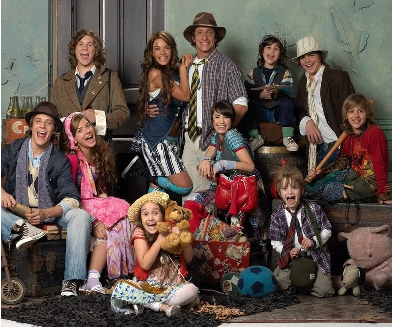

Bienvenida
Casi Ángeles fue una de las series juveniles más importantes de Argentina, creada por Cris Morena. Acompañó a miles de jóvenes entre 2007 y 2010 con su mezcla de música, aventuras, romance y mensajes de esperanza.
¿De qué trata?
La historia gira en torno a un grupo de chicos huérfanos que luchan por sus sueños en un mundo lleno de obstáculos. Liderados por Cielo, Nico y luego por sus propios valores, forman una familia unida por el amor, la amistad y la música.
Imagen destacada
